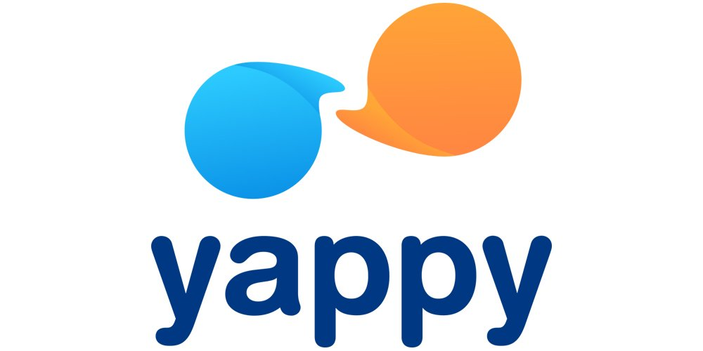

Aplicaciones que te facilitaran las cosas en Panamá

Waze
App que te ayuda a moverte en todo Panamá.

Pedidos Ya
App para perdir comida desde tu casa.
Degusta
App con información de restaurantes.
Medcon Go
App para noticias del pais y internacionales.

AirBnB
App para alquilar casa.

Uber
App que proporciona transporte.
ASAP
App de mensageria en Panamá

Yappy
App del Banco General